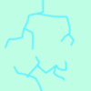
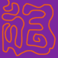
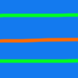
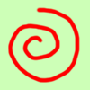

On the Subject of Exposing Exoplanets
I don’t like the amount of space they provides.
- The star in the middle of the module has a spinning direction (clockwise, counterclockwise).
- Each planet has a distance from star (inner, middle, outer), size (small, medium, large), orbital period in seconds (5, 10, 20, 40), orbiting direction (clockwise, counterclockwise) and a surface value determined using the table below.
| 0 | 1 | 2 | 3 | 4 |
 |
||||
| 5 | 6 | 7 | 8 | 9 |
 |
 |
 |
- If exactly two planets orbit in the same direction, the starting target planet is the remaining planet. If all planets orbit clockwise, the starting target planet is the inner planet. If all planets orbit counterclockwise, the starting target planet is the outer planet.
- The starting target digit is the surface value of the starting target planet.
- In the letter table, start on the row equal to the starting target planet’s distance from star and the first column.
- If the star is spinning clockwise, move right by the number of batteries on bomb. If the star is spinning counter-clockwise, move left by the number of batteries on bomb.
Repeat the following steps 3 times, resulting in 3 modifications:
- According to the planet corresponding to the current row, take the sum of the planet’s orbital period and surface value, and modulo by the number of battery holders (If there are no battery holders, modulo by 5). Then, add the number of ports to get your offset for this movement.
- If this planet is orbiting clockwise, move right equal to the offset, wrapping around. Otherwise, move left equal to the offset, wrapping around.